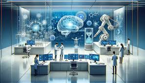

Artificial Intelligence (AI) has become one of the most transformative and rapidly evolving technologies of our time. From automating repetitive tasks to revolutionizing industries, AI is shaping how we live, work, and interact with the world. In this blog, we'll explore why AI is so important and how it impacts various aspects of our lives.
AI is at the forefront of innovation in industries such as healthcare, finance, and transportation. For example:
AI isn't just for businesses—it’s making everyday life more convenient:
AI is accelerating research in fields like astronomy, biology, and climate science. Machine learning models analyze vast amounts of data, leading to breakthroughs that were previously unimaginable.
Did You Know? AI systems can process data thousands of times faster than humans, making it an invaluable tool for solving complex problems.
While AI offers immense potential, it also raises important ethical questions:
Artificial Intelligence is not just a technological trend—it’s a fundamental shift that’s reshaping our world. By understanding its potential and addressing its challenges, we can harness AI to create a brighter, more efficient, and inclusive future.